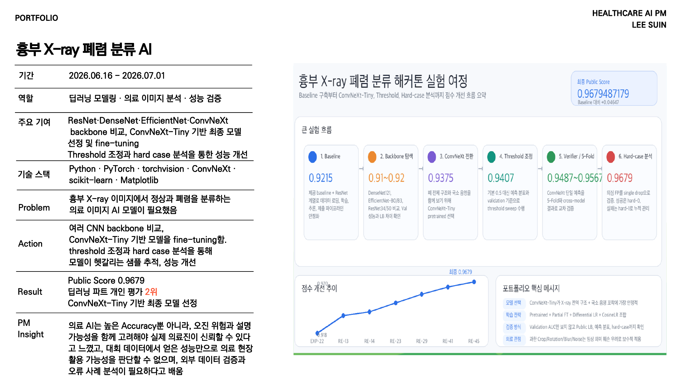

문제
흉부 X-ray 이미지에서 정상과 폐렴을 분류하는 모델이 필요했습니다. 단순 정확도보다 실제 의료 현장에서 신뢰할 수 있는 분류 안정성이 중요했습니다.
실행
ResNet, DenseNet, EfficientNet, ConvNeXt 계열을 비교하고 ConvNeXt-Tiny 기반 최종 모델을 선정했습니다. Threshold 조정과 Hard Case 분석을 통해 모델이 헷갈리는 샘플을 추적하고 성능을 개선했습니다.
기획 관점
의료 AI는 높은 Accuracy뿐 아니라 외부 검증, 오류 가능성, 설명 가능성을 함께 고려해야 실제 의료진이 신뢰할 수 있다고 느꼈습니다.
